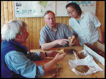
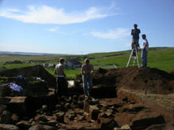
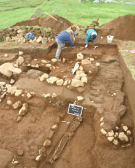

International Collaboration
The Mosfell Archaeological Project is conducted in a collaborative, international way under the direction of Prof. Jesse L. Byock of the University of California at Los Angeles (UCLA).
This international group works in close collaboration with members of the local Mosfellsbær community as well as with archaeologists from the Þjóðminjasafn (The Icelandic National Museum) and professors at the University of Iceland, the University of Oslo, and other Icelandic and international researchers.
We have received valuable logistic and financial support from the Icelandic Ministry of Education, Science, and Culture, the U. S. Embassy in Iceland, the John Simon Guggenheim Foundation, the Fulbright Foundation, the U. S. National Science Foundation, and the Centre for Baltic and Scandinavian Archaeology (ZBSA).

Phillip Walker, Per Holck, and Jacqueline Eng examing skeletal material from Hrísbrú.
Photographing the church excavations at Hrísbrú.
Excavating the churchyard at Hrísbrú.